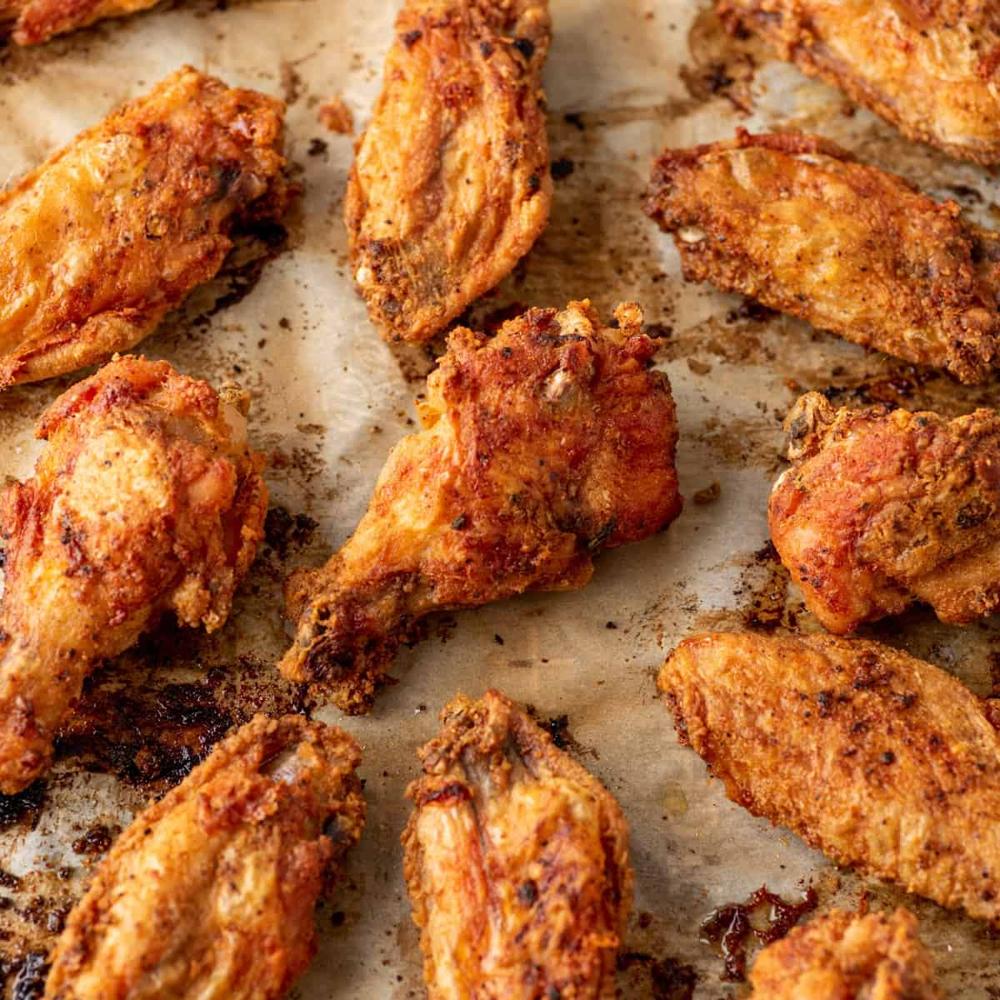

Crispy Baked Chicken Wings

This is my favorite way to make chicken wings. Healthier (and safer) than frying, very crispy and tasty, and overall very simple with surprising results!
Ingredients
- 4 lb / 2 kg chicken wings
- 5 teaspoons baking powder
- 3/4 teaspoons salt
Steps
- Lay the wings on a rack on a rimmed baking tray and let them dry in the fridge overnight. Alternatively, pat them dry with paper towels.
- Preheat the oven to 250F. Put one oven rack in the lower quarter of the oven and one in the top quarter.
- Place the wings in a large ziplock bag. Add the baking powder and salt. Shake the bag to coat the wings evenly.
- Line the tray with foil. Spray the rack on the baking tray with oil. Place the wings skin side up on the rack (ok if snug, they shrink). Bake on the lower rack in the oven for 30 minutes.
- Move the tray up to the higher rack and turn the oven up to 425F. Bake an additional 40 to 50 minutes, rotating the tray halfway through. The wings do not need to be turned over. The wings are ready when they are dark golden brown and the skin is very crispy.
- Toss wings in your favorite sauce and enjoy!
Return to Home Page